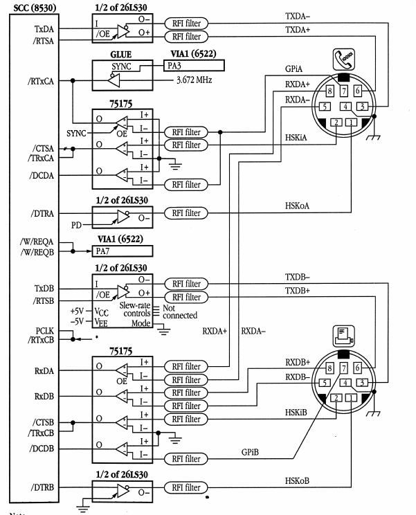

シリアルポートも見よ

| アドレス | 機能 |
|---|---|
| #00 | プリンタポートコマンド |
| #02 | モデムポートコマンド |
| #04 | プリンタポートデータ(WR8/RR8と同じ) |
| #06 | モデムポートデータ(WR8/RR8と同じ) |
割り込みではすべてのポートA（モデムポート）割り込みがポートB（プリンタポート）に優先される。
同じポートでは、以下の順で優先される
すべて、割り込みの起こったデータを読み出すと、割り込みフラグは解除される
| フラグ | 割り込み条件 | 補足 |
|---|---|---|
| 受信完了 | 下記参照 | 他の受信割り込みとはベクタの値が違う |
| オーバーラン | 受信FIFOが溢れた | |
| フレーミングエラー | 非同期モードで正しくデータが終端していない | |
| フレーム終了 | SDLCのフレームが終端した | |
| パリティエラー | パリティビットが一致しない | W2.2が有効の場合のみ |
送信が完了してバッファが空になるたびに割り込みが発生する。CRC計算完了後にも割り込みが発生する。バッファに値を書き込むか、Reset Tx Intを発行すると、割り込みフラグが解除される
WR15の各ビットが0の場合は、対応する割り込みは発生しない。割り込みが発生すると、RR0のうち、WR15が立っているビットはラッチされ、リセットされるまで、割り込み時の値を保持し続ける。
| 割り込み | 発生 | 解除 |
|---|---|---|
| ブレーク(非同期モードのみ)1 | ブレーク(NULL+framing error)を受信 | ビット1を受信 |
| アボート(SDLCモードのみ)2 | アボート(7つ以上のビット1)を受信 | ビット0を受信 |
| 転送アンダーラン・転送終了 | 送信バッファが空になった時、送信中止コマンドが送信された時 | リセットコマンド送信時 |
| CTS | HSKiA信号がHIGHになった時 | HSKiA信号がLOWになった時 |
| Sync(非同期・外部同期モード)3 | SYNC信号がHIGHになった時 | SYNC信号がLOWになった時 |
| Hunt(同期モード)4 | データ検索開始時（コマンド実行・アボート時） | データ検索完了時 |
| DTD | GPi信号がHIGHになった時 | GPi信号がLOWになった時 |
| ゼロカウント | ボー・ジェネレータカウンタが0になったとき | カウンタが初期化された時 |
送信時は、ビット数が6以上の場合は、WR8レジスタの下位Nビットが送信される。ビット数が5の場合には、実際のビット数は以下の表で決定される
| データ形式 | ビット数 |
|---|---|
| 1111000X | 1 |
| 111000XX | 2 |
| 11000XXX | 3 |
| 1000XXXX | 4 |
| 000XXXXX | 5 |
受信時は、非同期モードの場合、非更新ビットは1で埋められ、同期モードの場合は、未定義である。
以下は各モードで送信されるビット列である。ここで、各データは１〜８ビットのLSBファーストのデータ＋オプションのパリティビットの最大9ビットである
| 値 | 機能 |
|---|---|
00 |
何もしない |
01 |
受信CRCリセット |
10 |
送信CRCリセット |
11 |
メッセージ終了ラッチリセット |
| 値 | 機能 |
|---|---|
000 |
レジスタ番号として0-7を選択する |
001 |
レジスタ番号として8-15を選択する |
010 |
外部割り込みのラッチを解放する |
011 |
SDLCアボートを送信して、メッセージを終了する |
100 |
先頭文字状態初期化 |
101 |
送信終了。これ以降、送信バッファが空になっても割り込みを発生させない |
110 |
エラーのラッチを解放する |
111 |
処理中の割り込み状態を初期化して低位の割り込みを検知できるようにする |
これを指定する場合には、通常コマンドを0か1にする
W/REQピンの有効・無効化
W/REQがLowになるタイミング
| 値 | タイミング |
|---|---|
0 |
準備完了前にデータを送受信しようとするとき |
1 |
準備完了時 |
| 値 | 送/受信 |
|---|---|
0 |
送信 |
1 |
受信 |
| 値 | 割り込みタイミング |
|---|---|
00 |
無効 |
01 |
受信完了以外の特殊状態と先頭文字受信 |
10 |
受信完了以外の特殊状態と文字受信のたびに |
11 |
受信完了以外の特殊状態 |
パリティ異常時にデータエラーにするかどうか
送信割り込みの有効・無効フラグ
外部割り込みの有効・無効フラグ
初期割り込みベクタ。両方のポートで共用されている。
| 値 | ビット数 |
|---|---|
00 |
5 |
01 |
7 |
10 |
6 |
11 |
8 |
CTS（送信）/DCD（受信）を受信すると、自動で送受信を開始する。
値1を書き込むと同期モードの探索が開始する
同期モードで受信された文字をCRCチェッカに通す
SDLCモードでアドレスが不一致のデータを読み飛ばす
受信された文字がWR6と一致すると、データがスキップされる
受信処理を有効化する
| 値 | 倍率 |
|---|---|
00 |
1倍 |
01 |
16倍 |
10 |
32倍 |
11 |
64倍 |
| 値 | モード |
|---|---|
00 |
8bitSYNC |
01 |
16bitSYNC |
10 |
SDLCモード |
11 |
外部SYNC |
| 値 | モード |
|---|---|
00 |
ASYNC無効(Syncモード) |
01 |
1クロック停止ビット |
10 |
1.5クロック停止ビット |
11 |
2クロック停止ビット |
| 値 | パリティモード |
|---|---|
0 |
奇数パリティ |
1 |
偶数パリティ |
パリティの送受信をするかを決定する
| 値 | ビット数 |
|---|---|
00 |
5以下 |
01 |
7 |
10 |
6 |
11 |
8 |
1にするとブレークが送信される
0の間は送信が保留される
0ならばCRC-CTTITが使われる。1ならばCRC-IBMが使われる
RTSピンにこの値が送られる
1ならば送信の最後にCRCチェックサムが送信される
| Syncモード | 値 |
|---|---|
| 6bit Sync | 送信用8bit Sync（下位6bitが使われる。上位2bitは下位2bitのコピー |
| 8bit Sync | 送信用8bit Sync |
| 12bit Sync | 共用16bit Sync下位(上位4bitのみ、下位4bitは1固定) |
| 16bit Sync | 共用16bit Sync下位 |
| SDLC | アドレスフィールド |
| Syncモード | 値 |
|---|---|
| 6bit Sync | 受信用8bit Sync（上位6bitが使われる。) |
| 8bit Sync | 受信用8bit Sync |
| 12bit/16biyt Sync | 共用16bit Sync上位 |
| SDLC | 01111110固定 |
送信データ
| 値 | コマンド |
|---|---|
00 |
何もしない |
01 |
プリンタポートリセット |
10 |
モデムポートリセット |
11 |
SCC全リセット |
割り込みベクタの反映位置を決定する
0の場合、全割り込みが無効になる
1の場合、モデムポート受信以外の割り込みが無効になる
1の場合、割り込みに応答しない
1の場合、割り込み応答に結果コードを付与する
1の場合、CRCの初期ベクタが#FFFFになる
| 値 | 符号化方式 |
|---|---|
00 |
NRZ(HIGH=1,LOW=0) |
01 |
NRZI(stay=1,flip=0) |
10 |
FM1(edge=1,no-edge=0) |
11 |
FM0(no-edge=1, edge=0) |
TBD
SDLCループモードで$7E送信時にもう1ビット送信する
SDLCがアイドル時に1を流す
TBD
SDLCがバッファアンダーランの時にアボート信号を流す
Syncを6/12bitにする